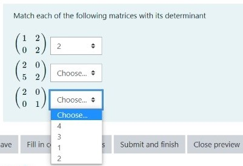

Moodle.jl
An experimental Julia package for creating Moodle questions.
A simple change.
Package Features
Currently the package can be used to create the following types of questions:
- short answer type questions;
- matching question;
- multiple choice questions.
Installing the package
Will write here how to install the package once it's written as a module.
Short answer type question
In the case of short answer type questions, Moodle displays a question and provides the students with a text box where they can put in their answers. The answer is compared to the stored correct answer and points will be given if they agree.
Matching questions
Generates a question that takes a list of statements or mathematical objects, and asks the student to match each object with an item from a list of numbers or statements (the list of items to be matched cannot contain LaTeX).
The question is created by typing "matching_question( title, text, subquestions)", where
- "title" is the name of the question, it's a string
- "text" is the text of the question. It must be a string and can contain LaTeX (though for the time being it has to be written in Moodle mode)
- "subquestions" is a list of two-element lists Xi, where the first element of each Xi is the object to presented, while the second element of Xi is the correct matching. Both elements of Xi are strings. The string S can be added to the list of options without necessarily corresponding to an object, by defining some X_i = ["", "S"].
For example:
julia> include( "/home/csaba/Projects/Moodle.jl/main.jl" ) #ERROR: SystemError: opening file "/home/csaba/Projects/Moodle.jl/main.jl": No such file or directoryjulia> import LinearAlgebrajulia> title = "Find Determinant";julia> text = "Match each of the following matrices with its determinant";julia> subquestions = [ ["\\(\\begin{pmatrix} 1 & 2 \\\\ 0 & 2 \\end{pmatrix}\\)", "2"], ["\\(\\begin{pmatrix} 2 & 0 \\\\ 5 & 2 \\end{pmatrix}\\)", "4"], ["\\(\\begin{pmatrix} 2 & 0 \\\\ 0 & 1 \\end{pmatrix}\\)", "2"], ["", 1], ["", 3] ]5-element Vector{Vector{Any}}: ["\\(\\begin{pmatrix} 1 & 2 \\\\ 0 & 2 \\end{pmatrix}\\)", "2"] ["\\(\\begin{pmatrix} 2 & 0 \\\\ 5 & 2 \\end{pmatrix}\\)", "4"] ["\\(\\begin{pmatrix} 2 & 0 \\\\ 0 & 1 \\end{pmatrix}\\)", "2"] ["", 1] ["", 3]julia> q = matching_question( title, text, subquestions )ERROR: UndefVarError: matching_question not definedjulia> qERROR: UndefVarError: q not defined
Importing the output to the moodle using [SECTION DESCRIBING HOW TO DO THIS], the following question is produced: 